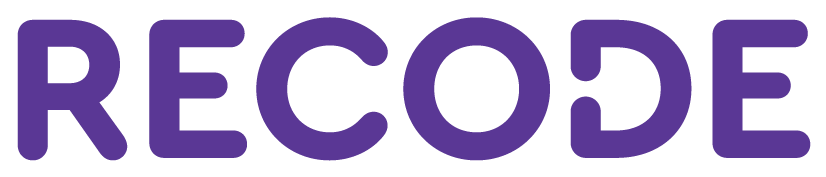
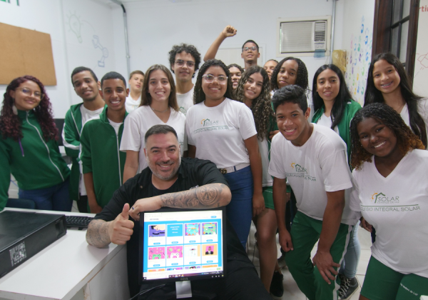

Seja um Apoiador Mensal
Com uma contribuição recorrente, você nos ajuda a manter as turmas ativas e expandir nosso alcance para novas comunidades.
Apoiar com Doação
A Recode capacita jovens e comunidades em situação de vulnerabilidade digital, transformando tecnologia em ferramentas reais de empregabilidade e cidadania.

A Recode é uma organização social que há anos democratiza o acesso ao universo digital e à programação. Acreditamos que toda pessoa, independentemente de sua origem, tem o potencial de se tornar protagonista de sua própria história e agente de transformação em sua comunidade.
Objetivo: Reduzir a desigualdade social através da capacitação em tecnologia, estimulando o pensamento crítico, a empregabilidade e o empreendedorismo.
Cursos gratuitos de programação, cidadania digital e ferramentas de mercado para jovens.
Formação focada em dar autonomia para que os alunos criem seus próprios negócios ou ingressem no mercado de trabalho.
Conexão entre alunos, mentores, empresas parceiras e comunidades locais.
Com uma contribuição recorrente, você nos ajuda a manter as turmas ativas e expandir nosso alcance para novas comunidades.
Apoiar com DoaçãoCompartilhe seu conhecimento técnico ou sua experiência profissional para guiar nossos alunos rumo ao mercado de trabalho.
Quero Ser VoluntárioDescubra como sua marca pode patrocinar projetos, contratar talentos formados por nós ou engajar colaboradores.
Seja uma Empresa Parceira